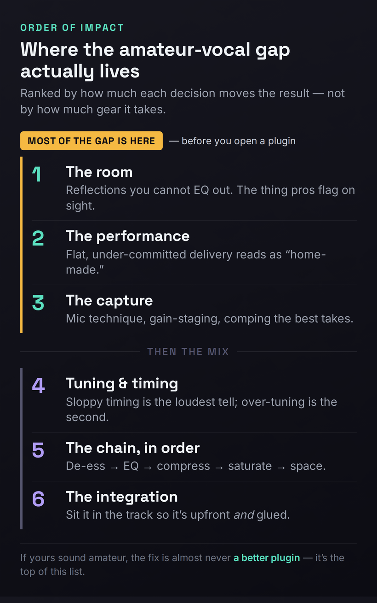
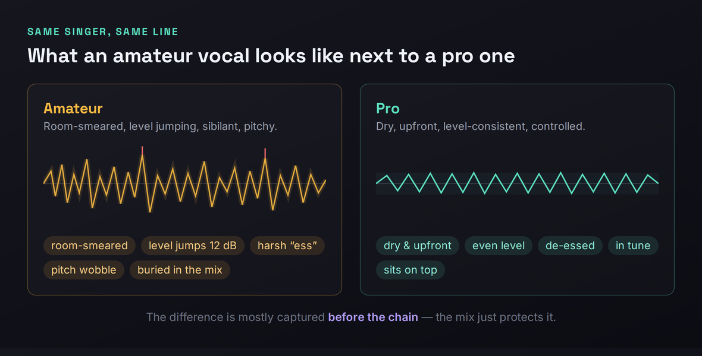
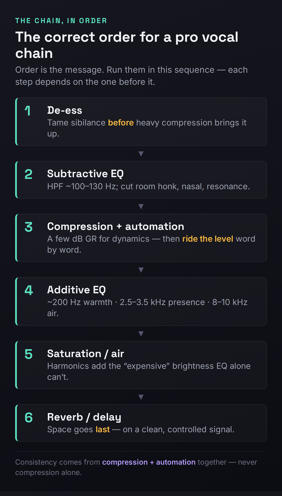

You record a vocal, drop it into the track, and the gap between what you made and what you hear on a song you love is immediate and a little demoralizing. Theirs sits forward, smooth, expensive, glued to the music like it was always there. Yours sounds smaller, further back, somehow home-made — and the instinct is always the same: it must be the plugins, or the mic, or some secret chain the pros aren’t sharing. That instinct is almost always wrong, and chasing it is why people spend money and stay stuck. The amateur sound is real, it is diagnosable, and the surprising truth is that most of it is decided before you open a single plugin.
This page is a diagnostic, not another “eight steps to mix a vocal” tutorial. The internet is wall-to-wall with those, and they quietly share one assumption: that the magic happens in the mix. It mostly doesn’t. The biggest tells of an amateur vocal — the ones a professional hears in the first two seconds — live in the room you recorded in, the performance you committed, and the take you kept, long before any EQ moves. So we’re going to work in the actual order of impact: the room first, then the performance, then the capture, then tuning and timing, and only then the processing chain and how the vocal sits. Fix them in that order and the “amateur” quality falls away faster than any plugin purchase could manage. Skip the top of the list and no chain on earth will save you.
A professional vocal is a stack of small correct decisions, and most of them happen before you open a plugin. In order of impact: control the room (reflections you can’t EQ out), commit the performance, capture clean (mic technique, gain-staging, comp the best takes), tune and time tastefully rather than robotically, then process in the right order — de-ess → subtractive EQ → compression with automation → additive EQ → saturation → space. If yours sound amateur, the fix is almost never “a better plugin” — it’s the top of that list.
The Reframe: A Professional Vocal Is Mostly Decided Before the Mix
Here is the idea that separates this page from every plugin tutorial you’ve read, stated as plainly as it deserves: the qualities that make a vocal sound professional are mostly captured, not created. A clean, committed, well-recorded take in a controlled space already sounds eighty percent of the way to professional with no processing at all. A flat performance in a reflective bedroom, recorded too hot through a poorly chosen mic, sounds amateur no matter how expensive the chain you bolt onto it — because processing can only shape what’s already on the recording, and it cannot un-bake the room, re-sing the line, or invent a presence that was never performed. Every move in the mix is a multiplier; the take is the number you’re multiplying. A great chain on a 9 gets you a 10. The same chain on a 3 gets you a slightly louder, slightly shinier 3.
That reframing is uncomfortable because it can’t be bought. It is far easier to believe the answer is a $250 plugin than to accept that the answer is hanging a duvet behind your mic and singing the line again with conviction. But it is also liberating, because it means the path to a professional vocal is mostly free, and it is mostly skill. The order of impact below is the whole article in one list: each rung matters more than the one beneath it, and the top three rungs — the room, the performance, the capture — are all settled before you ever reach for an EQ. Internalize the ranking and you will stop wasting time polishing problems that should have been prevented.

One more thing before we climb the list. “Professional” is not a single sound; it is the absence of tells. Listeners can’t usually say why a vocal sounds amateur, but they feel it instantly — a faint boxy halo around the voice, a level that lurches between words, a sibilant edge that stabs, a pitch that wobbles just off true. Each of those is a specific, nameable defect with a specific fix, and the rest of this page names all six and tells you exactly where each one comes from. You don’t need to chase a magic tone. You need to remove the tells, one by one, starting with the ones that matter most.
Amateur Tell #1: The Room You Can’t EQ Out
This is the single biggest cause of the amateur vocal sound, and it is the one almost nobody starts with, because it isn’t a plugin and it isn’t fun. When you sing in an untreated room — a normal bedroom with parallel walls, a hard ceiling, a window, a desk — the sound of your voice leaves your mouth, bounces off every surface, and arrives at the microphone a few milliseconds after the direct sound. The mic captures both: the voice, and a blurry, comb-filtered copy of the voice smeared with the character of the room. That smear is baked into the recording at the moment of capture, and here is the part that breaks people’s hearts: you cannot EQ it out. Reflections aren’t a frequency you can dip; they’re a thousand tiny delayed copies of the whole signal, and no equalizer removes a delay.
The symptom is unmistakable once you know to listen for it. An amateur vocal recorded in a live room sounds like it’s happening in a space rather than sitting on top of the track — there’s a faint boxy or honky halo, a distance, a sense that the voice is set back behind glass. Solo it and you can hear the room breathing around the words. A professional vocal, by contrast, is startlingly dry and close: it sounds like the singer is six inches from your ear, with no space of its own, which is exactly what lets the mix place it wherever it wants with reverb you chose rather than reverb you were stuck with. The pro controls the space. The amateur inherits it.
The fixes are mostly cheap and they stack. First, get close to the microphone — the closer your mouth, the higher the ratio of direct sound to reflected sound, and proximity alone buys a dramatically drier capture. Second, put distance between you and the hard surfaces: don’t sing in the middle of the room or facing a bare wall; the more absorptive material between the mic and the reflections, the better. Third, treat the first reflection points with real absorption — acoustic panels if you have them, but a thick duvet hung on a stand behind the mic, a wall of clothes in an open wardrobe, or a portable vocal booth all work, and the classic budget trick of recording inside a blanket fort genuinely does kill reflections. Our home studio acoustic treatment guide walks through how to find and treat the points that matter most without treating the whole room.
A word on the seductive shortcut. AI de-reverb plugins — Waves Clarity Vx DeReverb, Supertone Clear (the released successor to the GOYO beta), iZotope’s RX De-reverb — have gotten genuinely good, and you’ll be tempted to skip the room and fix it in software. Understand what they can and can’t do. They can shorten or remove the reverb tail, the audible decay after a word. They cannot undo the comb-filtering that has already colored the recording, because that coloration is fused into the direct sound itself, not trailing behind it. Reach for these tools to rescue a take you can’t re-record, and you’ll find a roundup of options in our best noise reduction plugins guide — but do not let their existence talk you out of treating the room. A treated room gives you a clean signal for free, forever; a de-reverb plugin gives you a damaged signal made less damaged. Treat the room, then keep the plugin for emergencies. If you’re unsure whether your problem is the room or the frequency balance, our EQ problem solver can help you localize what you’re actually hearing.
Two practical notes that beginners miss. The corners of a room are where low-frequency energy piles up, so if you have any absorption to spare, the corners behind and beside you do more than the flat wall in front; pointing the mic into a corner stuffed with soft material is a crude but effective vocal booth. And monitor while you track — record with headphones so you hear the take as it lands rather than discovering the room problem at mix time. Catching a boomy, boxy capture in the moment lets you move the mic, add a panel, or step closer and fix it at the source, which is the only place a room problem can actually be fixed.
Amateur Tell #2: A Performance That Reads as Home-Made
If the room is the tell pros see on a spectrogram, the performance is the tell every listener feels without knowing why. A flat, tentative, under-committed delivery reads as amateur no matter how clean the recording or how expensive the chain — because the human ear is exquisitely tuned to conviction, and it hears the difference between someone reciting words and someone meaning them. This is the rung that the plugin-tutorial world ignores entirely, and it is one of the two or three biggest reasons a vocal sounds home-made. You cannot process your way to a performance that wasn’t there.
Listen to what professional singers actually do that amateurs don’t, and a pattern emerges: they exaggerate. They lean into the transients — the consonants, the attacks, the dynamic swells — pushing them harder than feels natural because a microphone flattens energy that felt enormous in the room. They are deliberate about the ends of words, not just the beginnings: when a word cuts off, how a breath lands, whether a phrase tapers or stops dead. Amateurs obsess over hitting the first note of each line and let the tails fall wherever; pros shape the whole envelope of every phrase, and that control is a huge part of what reads as “produced.” The line isn’t just sung in tune; it’s performed, with intention on every syllable.
The practical work here costs nothing and changes everything. Warm up before you record, because cold vocal cords sound cold. Do multiple full passes rather than punching in word by word — you want the energy and continuity of a real performance, not a Frankenstein of careful fragments. Before you sing, mark the lyric: which words carry the meaning, where the phrase should swell, where it should pull back, where the important consonants land. Then perform that, not the notes. And commit — over-sing slightly, push the emotion past what feels comfortable, because the recording will pull it back toward neutral and a “safe” take almost always lands flat. The single most common note a professional producer gives an amateur singer is not about pitch or tone. It is mean it more.
One discipline ties the room and the performance together: capture the energy while it’s hot. If a take has the right feeling but a flubbed word, keep singing and do another whole pass rather than stopping to fix the one word — momentum is part of the performance, and you can comp the best moments together later. The goal at this stage is not perfection; it’s to get several committed, full-energy passes on tape that you can build a great composite from. Conviction first. Cleanup comes after.
Amateur Tell #3: The Capture — Mic, Gain, and the Takes You Keep
With a controlled room and a committed performance, the capture is where you lock in the quality — and where a few technical habits separate a professional-sounding recording from a usable-but-amateur one. Start with the microphone, but resist the assumption that more money equals more professional. The right mic is the one that flatters this voice in this genre, not the most expensive one. A large-diaphragm condenser captures detail and air and suits a lot of pop and soft vocals; a dynamic like the workhorse broadcast mics handles loud, aggressive, close delivery and rejects room beautifully, which is why it’s a rap and rock staple; a ribbon smooths a harsh or strident voice. A modest mic that suits your voice and a treated room will beat a flagship mic in a bad room every single time. Our best vocal microphones roundup covers the workhorses across budgets, and if you’re cutting aggressive rap takes specifically, the best microphones for rap vocals guide is more targeted.
Then technique, which is free and matters more than the mic. Use a pop filter, a few inches off the grille, to stop plosives — those low-frequency thumps from p and b sounds that scream amateur and are a nightmare to fix afterward. Keep a consistent distance from the mic; lunging in and pulling back swings your level and tone wildly and is a major reason amateur vocals lurch around. Sing slightly across the capsule rather than straight into it to soften both plosives and sibilance at the source. None of this is advanced — it’s just rarely taught, and our how to record vocals at home guide drills it properly.
Gain-staging is the quiet professional habit almost no beginner gets right. Record so your loudest peaks land around −12 dBFS and your average sits near −18 dBFS — healthy level with comfortable headroom. Amateurs record too hot, chasing a loud waveform, and either clip the take outright or push it so close to the ceiling that every plugin downstream behaves badly, because most analog-modeled processors are calibrated to expect that −18 average and get harsh or weird when slammed. Leave the headroom; you’ll add loudness later, on purpose, where it belongs.
Finally, the habit that quietly defines a pro vocal: comping. Record three to five full passes and assemble the best moments — the strongest line here, the cleaner consonant there, the breath that lands right — into one ideal lead. This is how professional vocals get their consistency and their magic; nobody nails the perfect whole take, so nobody tries to. And the hard rule that comes with it: do not accept a bad take to “fix it in the mix.” A pitchy, mistimed, or badly captured take is a problem you carry through the entire chain and never fully solve. If the take is wrong, re-record it — it is almost always faster and always better than trying to repair it later.

Amateur Tell #4: Tuning and Timing — and Over-Tuning
Most people think pitch correction is the dividing line between amateur and professional vocals. It isn’t — timing is. Sloppy timing is one of the loudest amateur tells there is, and it’s the one beginners almost never address because they can’t hear it until it’s pointed out. When syllables land slightly late or early against the beat, when backing vocals and harmonies don’t hit their consonants at the same instant as the lead, the whole vocal feels loose and unprofessional even when every note is perfectly in tune. The fix is tedious and transformative: align the vocal to the grid where it should be tight, and align stacked vocals word for word with the lead so the consonants snap together. Doubles and harmonies that aren’t time-aligned read as a blurry smear; the same parts aligned to the syllable suddenly sound like one wide, deliberate, expensive vocal.
Now pitch — where the second-loudest amateur tell hides, and it’s the opposite of what you’d guess. The amateur mistake is rarely too little tuning; it’s too much, applied carelessly, so the voice takes on that brittle, robotic, snapping quality that signals “processed” rather than “professional.” The professional approach is two-stage. First, fix the genuinely egregious notes — anything more than roughly ten to fifteen cents off — by hand, with manual pitch editing, so the correction is musical and invisible. Then let a transparent autotune gently tidy the rest, with the retune speed slowed down so it doesn’t snap, and humanize or flex-tune style settings engaged so natural vibrato and slides survive. The result is a vocal that’s in tune without sounding tuned. Our vocal tuning guide covers the manual-then-transparent workflow in depth, and how to use autotune walks the specific settings that avoid the snap.
The exception, of course, is when the hard-tuned, snapping effect is the sound you want — in a lot of modern pop, trap, and hyperpop the aggressive autotune artifact is the aesthetic, and there it’s a creative choice, not a tell. The point isn’t that tuning is bad; it’s that accidental over-tuning is amateur and intentional tuning of any flavor is fine. Know which one you’re doing. If you’re shopping for the tools, our best pitch correction plugins roundup compares the transparent correctors against the deliberately characterful ones, because they are genuinely different instruments for different jobs.
Amateur Tell #5: The Processing Chain, in the Right Order
Only now — with a dry capture, a committed take, clean tuning and tight timing — does the mix actually matter, and even here the amateur mistake is usually order, not gear. Run the same processors in the wrong sequence and you fight yourself the whole way; run them in the right sequence and each step makes the next one easier. The professional order is de-ess, then subtractive EQ, then compression with automation, then additive EQ, then saturation, then space — and the logic of that order is worth understanding rather than memorizing. Our how to mix vocals guide is the full walkthrough; what follows is why the order is what it is.
De-ess first, before heavy compression, because compression raises the quietest material toward the loudest — including sibilance — so if you compress before taming the ess sounds, you amplify them and then have to fight harder. Tame sibilance at the front and everything downstream is calmer. Then subtractive EQ: high-pass the rumble below where the voice actually lives, usually somewhere around 100 to 130 Hz, then sweep and cut the specific problem resonances — the boxy honk around 300 to 500 Hz, any nasal spike, the harsh resonance a particular voice always has. Cut to fix problems before you boost to add character; it keeps the vocal natural and gives the compressor a cleaner signal to work on. Our how to EQ vocals guide drills the subtractive-first discipline, and the frequency EQ reference tool is a fast cheat sheet for what lives where.
Compression comes next, and its job is dynamic control — evening out the loud and quiet words so the vocal sits at a steady level in the track. A few decibels of gain reduction is plenty for most vocals; the attack and release shape the tone as much as the level, with a slower attack preserving consonant punch and a faster one taming it. But here is the move that genuinely separates professional vocals from amateur ones, and almost no tutorial leads with it: compression alone cannot make a vocal consistent — you also have to automate the level. Pros ride the vocal fader (or draw clip-gain automation) word by word, lifting the syllables that duck under the music and pulling down the ones that jump out, so every word lands at the right level relative to the track. A compressor reacts to the loudest peaks; automation handles the musical intent the compressor can’t hear. Do both and the vocal becomes glued and present in a way that compression by itself never achieves. Our how to use compression on vocals and the deeper vocal compression guide cover the settings; the automation is the part to actually internalize.
One pro density trick worth adding once the basics are solid: parallel compression. Instead of crushing the main vocal, you send it to a second, heavily compressed copy and blend that underneath the natural one. The squashed copy fills in the quietest detail — breaths, tails, the bottom of the dynamic range — so the vocal feels thick and consistent without the lifeless, over-compressed sound that comes from slamming a single chain. It’s a big part of why commercial vocals sound dense and effortless at the same time, and it’s a far better path to “loud and present” than simply turning up one over-compressed track.
Then additive EQ, now that the level is controlled and you can hear what the voice truly needs: a touch of warmth around its fundamental (near 200 Hz, lower for deeper voices), a presence lift around 2.5 to 3.5 kHz to push it forward and intelligible, and a gentle air shelf up at 8 to 10 kHz for the open, modern sheen. After that, saturation or an exciter — subtle harmonic distortion that adds richness and the kind of “expensive” brightness that EQ alone can’t synthesize, because it’s generating new harmonics rather than boosting existing ones. Finally, space: reverb and delay, placed last, on a signal that is now clean and controlled, so the ambience you add is a deliberate effect rather than a smear layered on top of an already-messy vocal. Our how to use reverb on vocals guide covers placing space without washing the vocal out. If you want a sane starting chain to adapt rather than building from scratch, the best vocal presets and chains roundup is a good template — and our vocal chain builder will lay out a starting chain in the correct order for your voice type and genre so you’re not guessing the sequence.

Amateur Tell #6: Integration — Making It Sit in the Track
You can do everything above correctly and still end up with a vocal that sounds amateur, because there’s a final, separate skill: making the voice sit in the music. A clean, well-processed vocal that’s pasted on top of the track — bone dry, pinned dead-center, and either too loud or buried — reads as amateur because it sounds detached, like a voice and a backing track playing at the same time rather than one record. Professional integration is the art of gluing them together so the vocal is unmistakably upfront and unmistakably part of the music.
The most common failure is a vocal with no space at all. A completely dry voice sounds unnatural and disconnected; even “dry, upfront” pop vocals carry a short, subtle reverb or slap delay that places them in a believable space without pushing them back. The opposite failure is just as common — drowning the voice in reverb to make it “sound nice,” which shoves it behind the music and brings back the very distance you worked to eliminate when you treated the room. The target is a small, deliberate amount of space: enough to connect the vocal to the track, little enough to keep it forward.
Then there’s carving room for the voice in the arrangement itself. Pros don’t just turn the vocal up until it’s loud enough; they get the instrumental out of its way. A gentle dynamic EQ or sidechain on the music, dipping the frequencies the vocal occupies (especially that presence region) whenever the vocal is present, opens a pocket so the voice sits through the track rather than fighting it — and you get clarity without having to crank the level. This is also where the tonal failure modes show up: if the integrated vocal sounds thick and congested against the music, you have a low-mid pileup, and our why does my mix sound muddy diagnostic walks the exact fix; if it sounds brittle and stabbing on the loud words, that’s harshness, and how to fix a harsh mix covers taming the 2 to 5 kHz edge. For the full set of advanced moves — parallel processing, stacking, width, and bus treatment — our advanced vocal mixing guide goes deeper than we can here.
Step back and the whole picture resolves: a professional vocal is dry at the source, committed in the performance, captured cleanly, tuned and timed with taste, processed in the right order, and then deliberately sat into the track. No single step is the secret. The secret is that there is no secret — just a stack of correct decisions, most of them made before the mix, none of them requiring gear you can’t already afford.
The 60-Second Self-Diagnosis
Here’s how to use everything above the next time a vocal sounds amateur and you can’t name why. Solo the vocal and listen for the specific tell, then jump straight to the rung that fixes it — don’t start reaching for plugins until you know which problem you actually have. This mirrors the symptom-first approach of our mix-diagnostic guides: name the defect, then apply the one fix that addresses it.
If you want to take the guesswork out of the tonal half of that list, run a reference vocal and your vocal through the Mix Fingerprint tool to see exactly where your spectral balance diverges from a professional target, then point the chain at the gap rather than guessing. And when you’re ready to build the processing, the vocal chain builder lays out the steps in the correct order so the sequence is one less thing to get wrong.
Three Drills to Close the Gap
Reading this changes nothing; doing it changes everything. Run these three in order — each builds the skill the next one assumes.
- Record one line of a vocal in your room exactly as you normally would.
- Hang a thick duvet (or open a wardrobe full of clothes) behind the mic to kill the strongest reflection, get closer to the capsule, and record the same line again.
- Solo both takes back to back. The treated one should sound noticeably drier and closer — that audible gap is room smear you can’t EQ out, removed for free.
- Record three full passes of a section and comp the best moments of each into one lead — strongest line, cleanest consonant, best breath.
- On that comp, process strictly in order: de-ess, then subtractive EQ (high-pass plus one problem cut), then a few dB of compression.
- Bypass the whole chain and toggle. The processed version should be smoother and more present without sounding obviously effected — if it sounds “processed,” you went too far somewhere; back off.
- On a compressed lead, draw clip-gain or fader automation word by word so every syllable lands at the same level against the music — lift the duckers, pull the jumpers.
- Add a sidechain or dynamic EQ to the instrumental that dips the vocal’s presence region whenever the vocal plays, opening a pocket for it.
- A/B your finished vocal against a professional reference vocal at matched loudness. Where the reference sits more forward or more even, that’s your remaining gap — and now you know which rung to revisit.
Frequently Asked Questions
Because plugins shape what’s already on the recording — they can’t fix the things that actually make a vocal sound amateur, and most of those happen before the mix. The usual culprits, in order: an untreated room that smears the capture with reflections you can’t EQ out, a flat or under-committed performance, and a take that wasn’t recorded or comped well. A great chain on a poor take just gives you a louder, shinier poor take. Fix the room, the performance, and the capture first, and the same plugins will suddenly start sounding professional.
Almost always the room. A modest microphone in a treated, close-mic’d setup beats a flagship mic in a reflective bedroom every time, because the room’s reflections get baked into the recording and no amount of mic quality or EQ removes them. Test it: record the same line up close with a duvet behind the mic, then again out in the open room. The difference you hear is the room, not the mic. Spend on treatment and technique before you spend on a more expensive microphone.
Only partly, and never fully. You can tame some problems — de-essing, gentle de-reverb, pitch and timing repair — but you can’t add a performance that wasn’t committed, un-bake a room’s comb-filtering, or invent presence that was never captured. AI de-reverb tools remove the reflection tail but not the coloration already fused into the direct sound. If a take is genuinely bad, re-recording it is almost always faster and always better than trying to repair it through the whole chain. “Fix it in the mix” is the most expensive shortcut in music production.
No. The right mic matters more than the expensive one — a large-diaphragm condenser for detailed pop vocals, a dynamic for loud or aggressive close delivery, a ribbon to smooth a harsh voice — but a well-chosen modest mic in a treated room will outperform a flagship mic in a bad one. Most amateur vocals aren’t held back by the microphone at all; they’re held back by the room, the performance, and the technique. Get those right, then upgrade the mic if you still want to.
Three things stacked. First, a dry capture — a treated room and close-mic’ing mean there’s no room sound holding the voice back, so it can sit on top of the track. Second, controlled dynamics — compression plus level automation so every word lands at a steady, present level rather than ducking and jumping. Third, carving room in the arrangement so the instrumental gets out of the vocal’s way (a dynamic EQ or sidechain on the music) instead of just turning the vocal up. Upfront isn’t loud; it’s dry, even, and given space.
If you can hear it snapping and it wasn’t a deliberate effect, it’s too much. The transparent approach is to correct the genuinely off notes (more than about ten to fifteen cents) by hand, then let an autotune gently tidy the rest with a slowed retune speed and humanize or flex-tune settings so vibrato and slides survive. That gives you in-tune without sounding tuned. The exception is when the hard, robotic snap is the aesthetic — common in modern pop, trap, and hyperpop — in which case crank it; it’s a creative choice, not a tell. The mistake is over-tuning by accident.
De-ess, then subtractive EQ, then compression with automation, then additive EQ, then saturation, then reverb and delay. The order matters: de-essing before compression stops the compressor amplifying sibilance; cutting problems before boosting character keeps the voice natural; controlling the level before additive EQ lets you hear what the voice truly needs; and placing space last means you add ambience to a clean, controlled signal rather than smearing a messy one. The vocal chain builder tool lays this out in sequence if you want a starting point to adapt.
Compression and automation together — not compression alone. A compressor evens out the fast peaks, but it can’t hear musical intent, so words still duck under the track or jump out. The professional move is to ride the level by hand on top of the compression: draw clip-gain or fader automation word by word, lifting the syllables that disappear and pulling down the ones that stick out, so every word sits at the right level against the music. Consistency is the single biggest thing automation buys you, and it’s what compression by itself can never quite deliver.
Sibilance — the harsh edge on s and t sounds — usually comes from a bright mic, singing straight into the capsule, or compression amplifying the ess sounds. Fix it at the source first (sing slightly across the mic, use a pop filter) and then de-ess at the front of the chain, before heavy compression. General harshness in the 2 to 5 kHz region is a separate problem — often over-boosted presence or a resonant mic — and a narrow cut or a dynamic resonance suppressor tames it. Our harsh-mix diagnostic covers the wider 2 to 5 kHz fixes in detail.
You need some control of reflections, but not a fully treated studio. The reflections near your mic are what smear the recording, so treating just the first reflection points — or simply close-mic’ing with a thick duvet, an open wardrobe of clothes, or a portable booth behind the mic — gets you most of the way for almost no money. The goal is a dry capture, not silence. Even the classic blanket-fort trick genuinely works. What you can’t do is skip it and hope a plugin undoes the room afterward; it can’t fully, so a little treatment up front saves you the whole problem.
Get the room and the take right before you touch a plugin. If you only change one thing, close-mic in a controlled space (duvet or booth behind the mic, get close) and commit the performance — that one habit removes the two loudest amateur tells at once, the room smear and the flat delivery, and it costs nothing. Everything in the mix is a multiplier on the take; a great capture is the number you’re multiplying. Fix the capture and the rest of the chain finally has something worth polishing.